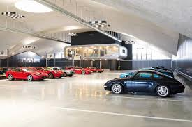
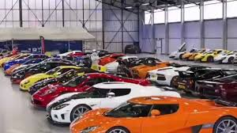
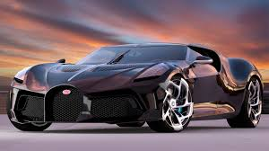

Quem Somos
Na Luxuria Cars, somos apaixonados por carros de luxo e comprometidos em oferecer uma experiência excepcional aos nossos clientes. Nosso objetivo é proporcionar acesso a uma seleção exclusiva de veículos que combinam elegância, performance e inovação tecnológica. Com uma equipe dedicada e experiente, estamos empenhados em superar as expectativas de cada cliente, oferecendo um atendimento personalizado e transparente. Valorizamos a integridade em todas as nossas operações e buscamos construir relações de confiança duradouras com aqueles que compartilham nossa paixão pelo luxo automotivo. Na Luxuria Cars, não apenas vendemos carros - criamos experiências memoráveis e realizamos sonhos automotivos
Motivos para comprar em nossa loja
- Exclusividade de Modelos Raros: Na Luxuria Cars, orgulhamo-nos de oferecer não apenas carros de luxo, mas também modelos raros e exclusivos que são verdadeiras peças de coleção, ideais para entusiastas que buscam algo único no mercado.
- Serviço de Manutenção Premium: Além de uma seleção premium de veículos, também oferecemos serviços de manutenção de classe mundial para garantir que seu carro de luxo mantenha seu desempenho máximo ao longo do tempo, com técnicos especializados e instalações de última geração.
- Financiamento Personalizado: Entendemos que a compra de um carro de luxo pode envolver considerações financeiras específicas. Por isso, oferecemos soluções de financiamento personalizadas para ajudar você a realizar seu sonho de possuir um carro exclusivo de maneira acessível e conveniente.
- Garantia Estendida e Suporte Pós-Venda: Todos os carros vendidos na Luxuria Cars vêm com garantia estendida e um sólido suporte pós-venda. Estamos comprometidos em garantir sua satisfação contínua após a compra, oferecendo assistência abrangente e orientação especializada sempre que necessário.
- Ambiente Convidativo e Experiência de Compra Luxuosa: Nossa loja é projetada para proporcionar uma experiência de compra luxuosa e sem igual. Desde o ambiente acolhedor até o serviço personalizado, cada visita à Luxuria Cars é uma oportunidade de explorar e descobrir o mundo dos carros de luxo de uma maneira única e gratificante.
Objetivos
Na Luxuria Cars, nosso principal objetivo é estabelecer um padrão excepcional no mercado de carros de luxo. Buscamos não apenas oferecer uma seleção incomparável de veículos de prestígio, mas também proporcionar uma experiência de compra que seja memorável e gratificante para cada cliente. Nosso compromisso com a transparência, integridade e excelência em serviço nos guia diariamente, enquanto trabalhamos para superar as expectativas e construir relações duradouras com nossa clientela. Almejamos ser reconhecidos como líderes no setor, não apenas pela qualidade dos carros que vendemos, mas também pela dedicação em proporcionar um atendimento personalizado que transforma o sonho de possuir um carro de luxo em realidade.